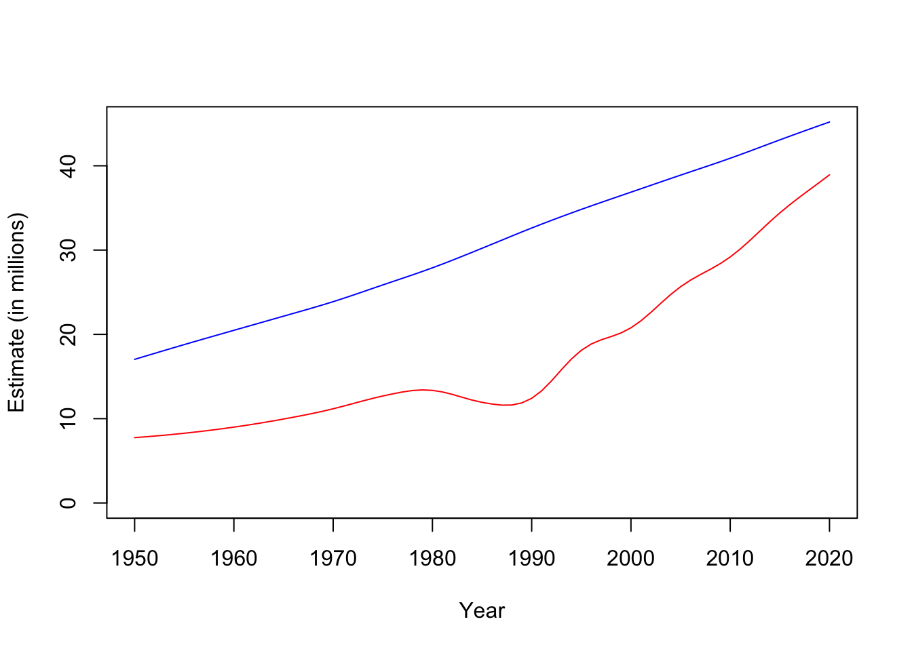

Chapter 25 Thurs Mar 3: LAB 4 - Data manipulation
The deadline to submit your work is Thurs Mar 10.
HAND-IN: You are to make a line graph using the data from the Our World in data website with Year on the x-axis, and two lines each representing different data. Hand in your: (1) R Script that makes your graph; (2) the graph or the .csv file. Remember to use Best Practices for writing your script.
Get started by reading:
and if you need to remember how to make a graph:
From the Our World in data website some of the charts have a download option in the bottom row. Choose a data set to download as a .csv.
Below is an example solution to this lab that may help you. There are many solutions to this lab. You should use the code below as a guide, but your solution should plot different data. If you are able to use the dplyr package, you will likely find it easier. If you cannot load dplyr, then you may complete this lab in base R.
## Load dplypr - this is a package that makes data handling easier
require(dplyr)
## Import the data
# (Download and save the .csv data (change the name of the file if you need too). Make sure the data is saved as a .csv, and you know the location where it is saved. You might also use the "Import Dataset" button.)
population <- read.csv("~/Desktop/population.csv")
# In the console, now, I would query head(population) to see that the
# data has loaded
## Change column names to more sensible names
# (I typed population$ in the console, let the column names autofill, and then I copied the long column name)
# The code below is using pipes %>% which are useful if working with the dplyr package.
#[If you are working in base R, you will just need to write this out as several lines of code and write out the variable names that you are applying your manipulations too each time]
population <- population %>% rename(Estimate=Estimates..1950...2020..Total.population.by.broad.age.group..both.sexes.combined..thousands....Total, Fertility = Medium.fertility.variant..2020...2100..Total.population.by.broad.age.group..both.sexes.combined..thousands....Total)
## Filter for 'Afganistan' as a country, select columns Year and Estimate, remove entries that are NA in the Estimate column
AFG <- population %>% filter(Code=="AFG") %>% select(Year,Estimate) %>% filter(!is.na(Estimate))
# Filter for 'Argentina' as a country, select columns Year and Estimate, remove entries that are NA in the Estimate column
ARG <- population %>% filter(Code=="ARG") %>% select(Year,Estimate) %>% filter(!is.na(Estimate))
# Below is a command that I ran in the console to see what my data looked like - particularly, I am interested in if the same years occur for both AFG and ARG
#plot(AFG$Year, AFG$Estimate)
#plot(ARG$Year, ARG$Estimate)
# How many entries in the columns of ARG and AFG?
# length(ARG$Year)
# length(AFG$Year)
# What is the start year?
# AFG$Year[1]
# ARG$Year[1]
# What is the last year?
# tail(AFG$Year,1)
# tail(ARG$Year,1)
# Both the Argentina and Afganistan data have the same years. I would like to combine the data I have columns: Year, ARG, and AFG:
# [But first I need to change the column name 'Estimate' to either 'ARG' or 'AFG']
ARG<-ARG %>% rename(ARG=Estimate)
AFG<-AFG %>% rename(AFG=Estimate)
## Join the two different datasets into one data set called 'data'
data<-left_join(ARG, AFG)
# I would like to change the units to millions (so that the y-axis of my graph is nice)
data <- data %>% mutate(ARG=ARG/1e6,AFG=AFG/1e6)
## Plotting
# To get a good y-axis I set the limits as starting at 0 and whichever is the maximum value of the y-axis data for ARG or AFG.
plot(data$Year, data$ARG, col = "blue", typ = "l", ylim = c(0,max(data$ARG, data$AFG)), ylab = "Estimate (in millions)", xlab = "Year")
lines(data$Year, data$AFG, col = "red")
There are many ways of going about this assignment - good luck! And please ask if you need help.